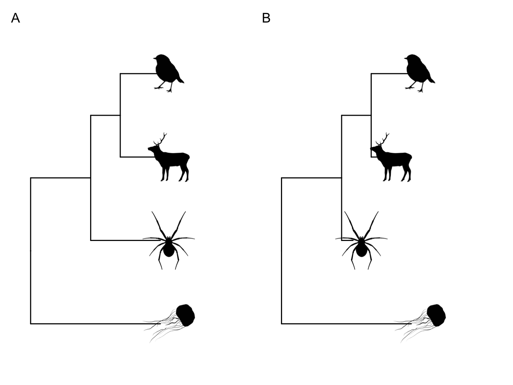
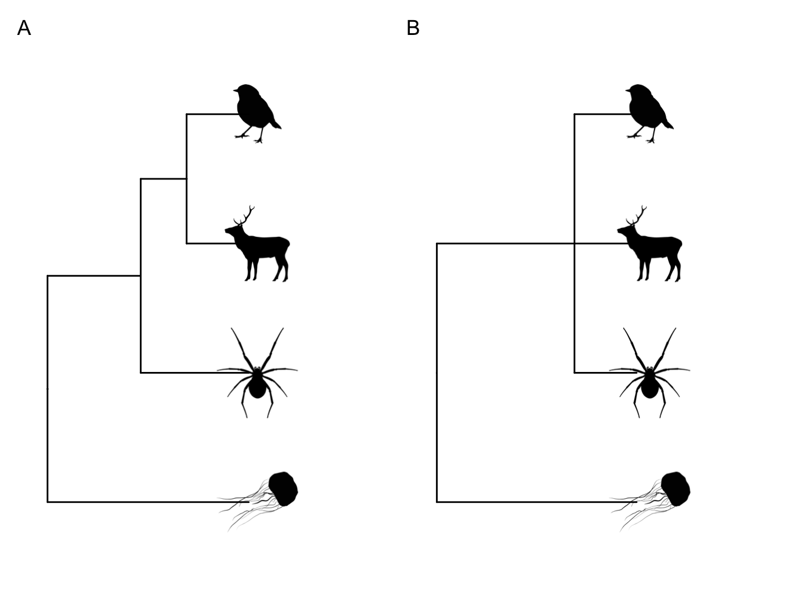
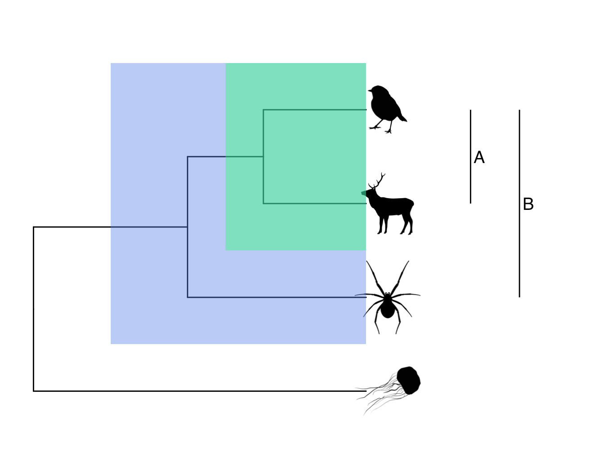
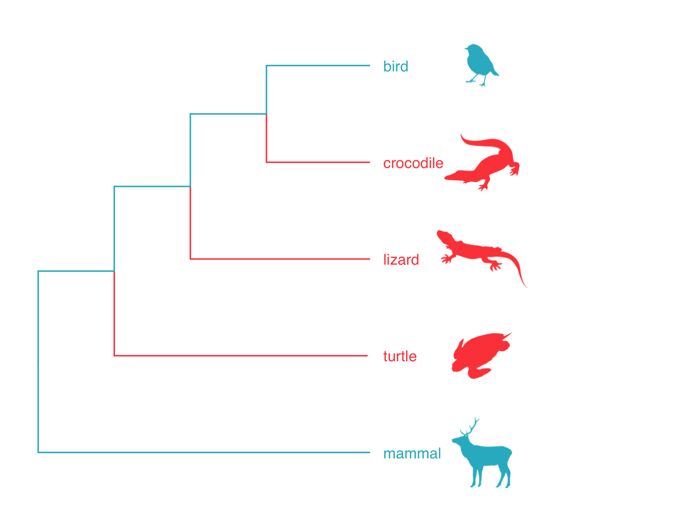
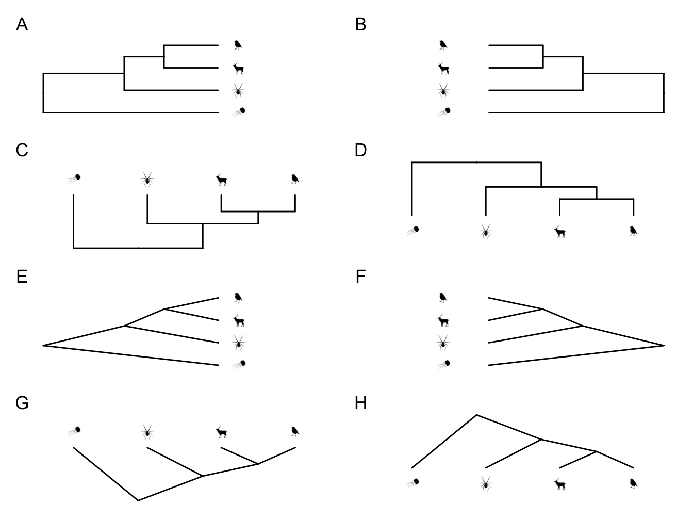
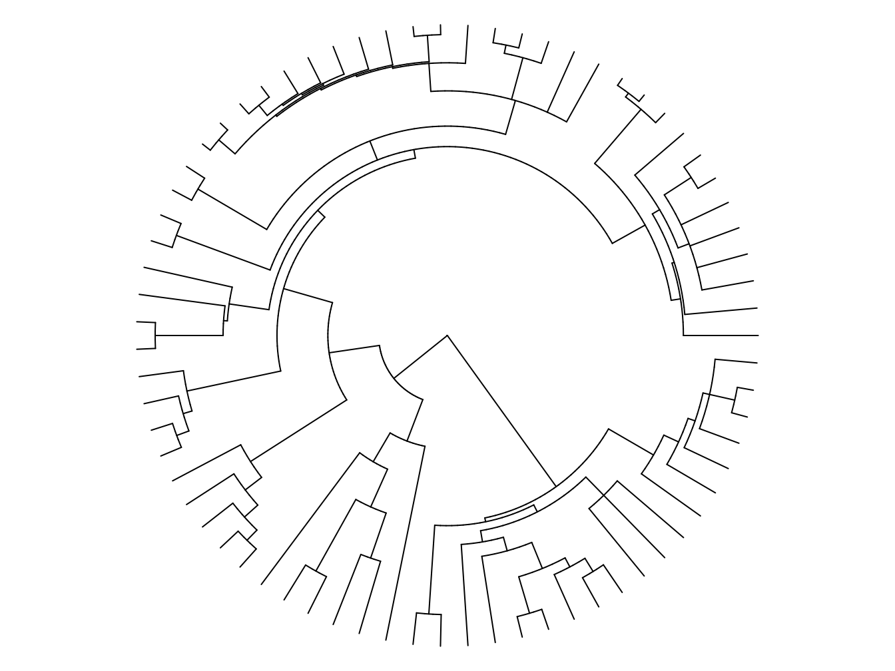
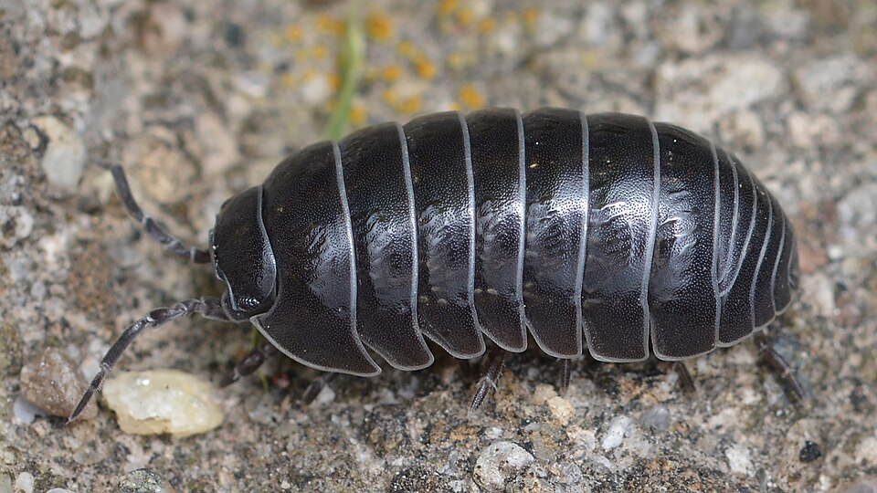
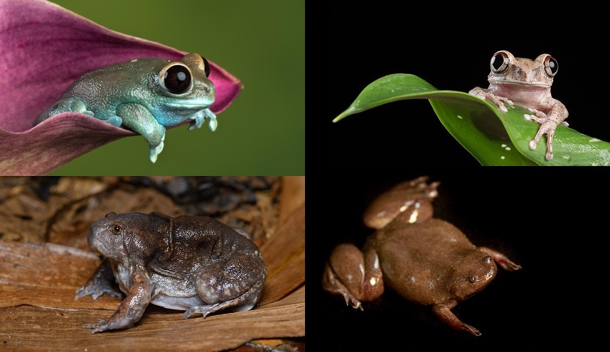
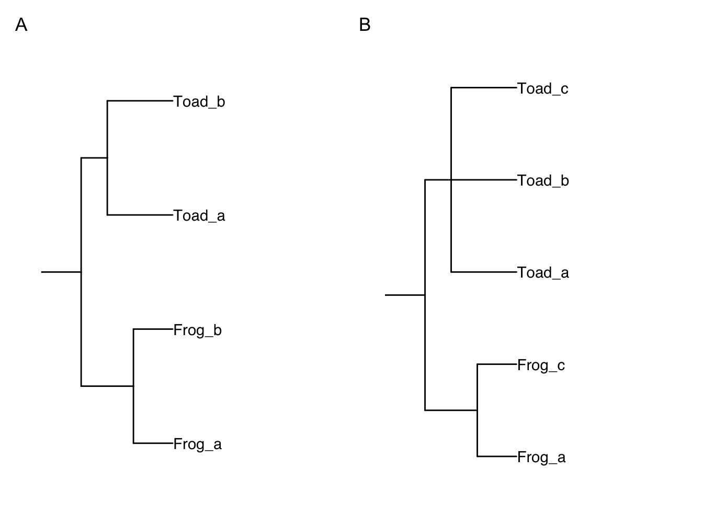

2 Phylogenies and comparative data
Natalie Cooper
Before we use phylogenetic comparative methods, we need to understand the basic building blocks of these methods; phylogenies and comparative data. In this chapter we introduce key terminology and concepts related to phylogenies, including how to read and interpret them, before briefly covering the main ways that phylogenies are inferred. We discuss where people commonly source their phylogenies for phylogenetic comparative analyses, and how best to compile the data needed to perform the kinds of analyses we describe in later chapters.
2.1 A basic introduction to phylogenies
At its simplest, a phylogeny or phylogenetic tree is a branching diagram that shows how species are related. Figure 2.1 shows the features of a phylogenetic tree.The ancestor of all of the species is found at the root of the tree, with the species at the tips. The rest of the tree is made up of nodes and branches. Nodes show us where speciation events have occurred, i.e. where one species has evolved into two (or more) new species. The branches show the relationships among nodes and tips (Figure 2.1).
Most phylogenies are rooted, meaning that the ancestral node or root is identified. Phylogenies are rooted using an outgroup. The outgroup can be one or more species, and represents a species or group known to lie outside the group of interest, the ingroup. The root lies on the node that joins the outgroup to the ingroup. In an unrooted tree, no root is defined, meaning while we can look at the relationships among species, we cannot identify ancestral characteristics or how species change through time. This limits their usefulness, especially for comparative methods.
Some phylogenies only show the topology, i.e. the shape of the relationships among the species. We call these cladograms. Most phylogenies, however, will have some information encoded in the branch lengths too. Depending on the data used to build the tree (see section 2.1.2), branch lengths can represent amounts of trait change, molecular distances, or absolute or relative divergence times. Most phylogenetic comparative methods require phylogenies to be dated phylogenies (or chronograms), where the branch lengths represent divergence times.
Note that throughout the book for simplicity we generally refer to “species” at the tips of phylogenies. In some cases, the tips will actually be genera or populations, or other operational taxonomic units (OTUs). Before beginning a comparative study, remember to check what the tips are in the phylogeny you are using.

Figure 2.1: A simple phylogeny demonstrating the key features of phylogenetic trees.
To use phylogenies we need to understand a few more terms.
Ultrametric. Most of the phylogenies we will use in this book are ultrametric, like the one in Figure 2.2A, where all the branches end at the same place - the present-day . If you are using phylogenies containing extinct species then the phylogeny will usually be non-ultrametric, like the one in Figure 2.2B. Note that phylogenies based on molecular data will also be non-ultrametric unless they have been dated.

Figure 2.2: Ultrametric (A) and non-ultrametric (B) phylogenies. In (B) the mammal and spider have gone extinct before the present day.
Polytomies. The phylogenies we will use in this book will be fully resolved, i.e. each node will lead to two branches. This might not always be the case, however. When more than two branches originate from a node we call this a polytomy. You can see an example of a polytomy in Figure 2.3B. Polytomies can be hard or soft. Hard polytomies represent the true evolutionary history of a group, often occurring where there has been rapid evolution. Soft polytomies, on the other hand, represent problems in phylogenetic inference (see below) where the methods cannot resolve the relationships among the species at that point.

Figure 2.3: A fully resolved phylogeny (A) versus one with a polytomy (B). This polytomy suggests that the relationships among the mammal, the bird and the spider are unresolved.
Monophyly and clades. A group of species that all share a common ancestor are referred to as a monophyletic group or a clade. In Figure 2.4 the mammal and the bird form a monophyletic group or clade. Often, common taxonomic groupings, e.g. mammals, are also monophyletic groups. Sometimes, taxonomic groups are nested within other taxonomic groups in a phylogeny. Figure 2.5 shows an example using birds and reptiles. Birds are nested within reptiles so that although birds are a monophyletic group, reptiles are a paraphyletic group. We can also have polyphyletic groups where the group members appear in multiple lineages across a phylogeny, for example the group formed by birds and mammals in Figure 2.5.

Figure 2.4: Phylogeny highlighting the monophyletic groups or clades. A is a clade made up of the mammal and the robin. B is the more inclusive clade including the mammal, the bird and the spider.

Figure 2.5: Phylogeny showing the relationships among birds, mammals and reptiles. Reptiles forms a paraphyletic group because birds is nested within it. The group formed by birds and mammals is a polyphyletic group.
2.1.1 Reading and interpreting phylogenies
We can read/interpret the phylogeny in Figure 2.6 as follows. A and B are each others’ closest relatives. They share a common ancestor at node X. We can think of the branch leading to node X as the shared evolutionary history of A and B, while the branch leading from node X to A represents A’s evolution independent of B after they speciated, and the branch leading from node X to B represents B’s evolution independent of A. A and B form a monophyletic group. They are also sister species. Note that in real world examples it is virtually impossible to know the identity of the species at node X. The fossil record is not fine-grained enough.

Figure 2.6: How to read a phylogenetic tree
Both A and B are equally closely-related to C, as they all share a common ancestor at node Y. Note that B is not more closely related to C just because it is closer to it vertically at the tips of the tree. We could also represent the relationship as shown in Figure 2.6B with the branch leading to B and A rotated.
Reading phylogenies is not always intuitive. Often this is due to how we represent them graphically. For example, each of the phylogenies in Figure 2.7 shows the same relationships among species, but in different ways. By convention we usually present phylogenies with the root at the left or the base of the phylogeny (like A, C, E, or G in Figure 2.7).

Figure 2.7: All of these phylogenies show the same species relationships, they are just presented in different ways
We can also use circular or fan shaped phylogenies like Figure 2.8 when we have large phylogenies that are hard to fit onto a page.

Figure 2.8: An example of a fan or circular phylogeny. Tip labels have been omitted to make it easier to see the shape of the tree.
If you find reading and understanding phylogenies difficult, we highly recommend trying the Tree Thinking Challenge [12], which should help you get the hang of it.
2.1.2 How do we infer phylogenies?
We could write a whole book just about inferring phylogenies. In fact, there already are several e.g. [13]. Here we will just cover the basics, focusing on the information you’ll need to be able to understand the rest of the book.
Note that we infer phylogenies. We do not build or create them. This is because whatever clever methods we use, we can never truly know the evolutionary history of most groups until someone invents a time machine!
Most phylogenies are inferred using molecular or morphological data. Molecular data is usually a gene sequence, with the genes used depending on the question/group of interest, but can also be amino acid or protein sequences. For distinguishing relationships among close relatives, fast-evolving genes such as those in mitochondria or chloroplasts might be used, whereas protein-coding genes or whole genomes might be more appropriate for looking at relationships among ancient lineages. Collecting molecular data these days might be as simple as downloading it from GenBank, however, the sequences still need to be aligned which can take more time.
Morphological data is generally in the form of cladistic matrices where each character or trait of a species is coded as an integer. For example, a tail might be coded as 0 (absent) or 1 (present). Selecting characters for morphological phylogenies can be tricky, as they need to encompass the synapomorphies or unique characters that define clades in the tree, but the characters should also be independent of one another. Careful consideration of how characters should be coded is also needed, and this can vary from study to study.
Once the data have been collected they can be plugged into one of a number of software packages that will apply one or more phylogenetic inference methods to output the “best” tree or trees. Here we will just mention the three most used inference methods: parsimony, Maximum Likelihood and Bayesian inference.
One common feature of all phylogenetic inference methods is that they are computationally intensive, i.e they require powerful computers and take a lot of time (sometimes many months) to run. Why? If you have three species, there are three possible ways those three species could be related in a fully-resolved tree. If we have ten species there are \(34,459,425\) possible trees! If we have 50 species we have \(2.75292 × 10^{76}\) possible trees (if you want to work this out for yourself, the equation used is \(N_{trees} = (2n-3)!/2^{n-2} * (n-2)!\); [13]). To put that in context, that’s more trees than there are stars in the sky, or grains of sand on Earth. That’s a lot of possible trees… This means that no phylogenetic inference method can afford to search all of tree space, i.e. the universe of all possible trees. Instead, each method applies number of analytical tricks to avoid this, although we will not go into detail about this here.
2.1.2.1 Parsimony
Parsimony has fallen out of favour as a method of phylogeny building in recent years, but it is still probably the best, and fastest, way to build phylogenies using morphological data. Parsimony works on the basis that the simplest solution is best, so the algorithms select the tree that accounts for the data with the fewest changes in character states across the tree, and outputs the most parsimonious phylogeny or phylogenies that satisfy that criterion.
Ideally, this will result in one most parsimonious tree, but often more than one phylogeny meets this criterion. In these cases it is usual to create a consensus tree, an average topology across all the most parsimonious trees. There are several ways to construct these, from strict consensus trees that include only relationships shown in all most parsimonious trees, to majority rule consensus trees that include all relationships found in at least 50% of the most parsimonious trees. Consensus trees are one way that polytomies can be introduced into phylogenies (see Figure 2.3).
2.1.2.2 Maximum Likelihood (ML)
Maximum Likelihood is a statistical method for estimating the unknown parameters of a model. Likelihood is proportional to the probability of observing the data given the model, P(data|model). The Maximum Likelihood solution is the one that has the highest Likelihood, i.e. the model that best describes the observed data. We will use Maximum Likelihood throughout this book to estimate parameters in many different types of models.
In the case of phylogenetic inference, our model is the tree and an evolutionary model describing how the trait data (e.g. gene sequences or morphological characters) change. We therefore use Likelihood to calculate the probability of the observed trait data given the phylogeny and evolutionary model. The method selects the tree that best accounts for the data, i.e. the phylogeny or phylogenies with the Maximum Likelihood.
Maximum Likelihood is considered to be a better phylogenetic inference method than parsimony for molecular data because we can explicitly define the underlying evolutionary model of DNA evolution, rather than just assuming the smallest number of changes gives the best tree. Remember that DNA is made up of four bases (cytosine [C], guanine [G], adenine [A] and thymine [T]), and these can be split into pyrimidines (C and T) and purines (A and G). Changes from C to T (and vice versa), or A to G (and vice versa), are called transitions, and these appear to be easier and thus occur at a higher rate than transversions, i.e. changes from C to A (and vice versa), or C to G (and vice versa), or T to A (and vice versa), or T to G (and vice versa). The frequencies of bases can also vary. Multiple models of DNA sequence evolution exist that take into account these various factors. The most commonly used are:
- JC. Jukes Cantor [14]. This is the simplest model possible. All base changes are equally likely; base frequencies are equal.
- K2P. Kimura 2 parameter [15]. Transitions and transversions have different substitution rates; base frequencies are equal.
- HKY85. Hasegawa-Kishino-Yano-85 [16]. Transitions and transversions have different substitution rates; base frequencies can vary.
- GTR. General Time Reversible [17]. All six types of base change (A to C, A to G, A to T, C to G, C to T, and G to T) occur at a different rate, and base frequencies vary.
Maximum Likelihood approaches can use any of these models, or any other model we might want to define. In practice, we try out lots of different models, then use the best fitting model to infer our phylogeny. It is harder to come up with sensible, simple models of evolution for morphological data (although they do exist, for example the Mkv model; [18]), thus Maximum Likelihood approaches are used less often for morphological datasets.
Maximum Likelihood approaches are very computationally intensive and can be very slow, certainly much slower than parsimony. Like parsimony, it is common for more than one phylogeny to have the same Maximum Likelihood so we need to construct consensus trees. Maximum Likelihood can yield biased solutions, and can also lead us to put undue faith in one ‘best’ solution even though others might be nearly as good. Apart from very simple analyses (e.g. calculating the confidence interval for a mean), the analytical and computational complexity of Likelihood methods mean that they don’t readily allow us to accommodate uncertainty in our estimates.
2.1.2.3 Bayesian inference
Bayesian methods deal with some of the limitations of Maximum Likelihood methods. Bayesian methods calculate the probability of the model given the data, P(model|data). In the case of Bayesian phylogenetic inference, we calculate the probability of the observed phylogeny given the trait data and the underlying evolutionary model. These models are the same as those used in Maximum Likelihood tree inference.
The main difference between Bayesian approaches and both Maximum Likelihood and parsimony, is that we are no longer searching tree space for the “best” tree or trees. Instead, Bayesian methods output a posterior distribution of trees. The Bayesian method searches tree space, saving and outputting all trees it finds at regular intervals. This can result in thousands or even millions of possible trees. The user then specifies how many trees they would like to export as a posterior distribution of trees. This will consist of that number of trees, spread across the variety of trees inferred, but with the frequency of their occurrence being based on their probability. For example, if your Bayesian method produces tree topologies A-Z, but topologies A-D are most common, the posterior distribution of trees will mirror that and will contain more trees with topologies A-D, than those with topologies E-Z.
The reasoning behind this is that phylogenetic inference is complex, so the probability of there being just one (or a few) trees that best represent the relationships among species is unlikely. With Bayesian approaches it is possible to get a clearer idea of phylogenetic uncertainty, and to actually incorporate this into our understanding of species relationships and downstream comparative analyses.
Because of the way posterior distributions are constructed, consensus trees are not appropriate for Bayesian phylogenies. Instead, we tend to run each analysis on the whole posterior distribution of trees, resulting in a posterior distribution of results. This can be a little more difficult to visualise (in papers we generally use just one tree from the posterior to visualise the results), but gives a much better understanding of the effect of phylogenetic uncertainty on comparative analyses.
2.1.2.4 Branch support
The trees produced in all three of the methods above may contain measures of branch support (note that people often, incorrectly, refer to this as node support but they mean the same thing). These will be shown as numbers above or below the nodes of the phylogeny if you’re looking at the published version. Branch support measures tell you how much support there is for a particular branching pattern. There are many ways we can estimate branch support in a phylogeny [13], but the details are not important here. The key thing to remember is that the higher the branch support value, the more confidence we have in that particular branch. Usually these methods give numbers that range from 0-100 (e.g. bootstrap values), but other measures (e.g. posterior probabilities) range from 0-1. It should be obvious whether a 0-100 or 0-1 scale is being used from the range of numbers you can see. It’s also common for people to collapse branches with low support leading to polytomies.
2.1.3 Where do we get phylogenies from for comparative analyses?
Above we explained how phylogenies are inferred, but you have probably gathered by now that we are not experts in phylogenetic inference! So where do we get phylogenies from for comparative methods? The simple answer is the Internet! Less flippantly, we get them from the published literature. Generally people publishing phylogenies will provide a NEXUS or Newick file containing their phylogeny as part of their supplementary materials. This is often a file ending in .nex or .tre. In the online materials we show you how to read these files into R, and explain more about how these files are structured. If an author has not provided their phylogeny in a format you can read into R (for example they may just have provided a PDF of the topology) you can email them and see if they are willing/able to give you a copy, or try a tool like TreeSnatcher. Some researchers also store phylogenies in online databases such as Treebase.
How do you choose the “best” phylogeny for your group? There is no hard or fast rule here, but we do recommend taking some time to think about this carefully. In some taxonomic groups you will have no choice as there may only be one existing phylogeny. In other groups you may be spoiled for choice. How you make the decision will also depend on how much you already know about the group in question. Some questions to ask that may guide you to the best phylogeny include:
- Given your knowledge of the group, does the taxonomy they have used and the characters used to infer the tree make sense? This may be particularly important for morphological trees, but it is also important to check they used an appropriate gene if using molecular trees.
- How many of your species are included in the phylogeny? You can add or remove species easily in R (see online materials), but if many species are missing it may be better to choose an alternative tree. You can also stitch together multiple trees (see online materials).
- What kind of method was used to infer the phylogeny? Does it seem appropriate to you? A phylogeny using molecular data but inferred using parsimony may ring alarm bells…
- Are the branches of the phylogeny well-supported? Good values will be close to 100 or 1 depending on the method used.
- Are there lots of polytomies or is the phylogeny well-resolved? The methods we use in R can cope with polytomies but if there are more resolved phylogenies available these will be better.
- Can you access several different versions of the phylogeny, or a posterior distribution of phylogenies to account for phylogenetic uncertainty?
- If you don’t know the group, or phylogenetics, well, don’t be afraid to ask the opinion of someone who knows more than you. They may save you hours of pain and indecision!
Inferring phylogenies is really difficult. We make many assumptions and choices at each stage of the process, from data collection to making consensus trees. As such, phylogenies are unlikely to give us the “true” evolutionary history of a group. Instead phylogenies are hypotheses about the way evolution happened. It is crucial to remember this when applying and interpreting comparative methods. Even if your comparative method is perfect in every way, you are still basing your analysis on a hypothesis about how species evolved. If this is incorrect, and it almost certainly is (due to missing extinct species etc.), then your results may not be as robust as you imagine.
2.2 Comparative data
We have talked above about where we get phylogenies from, but what about the comparative data itself? There are a number of options and these will vary depending on your question and the data availability for your study group. Most comparative data will come from a range of sources, including peer-reviewed literature, books, field guides, Internet searches, and curated databases. You can also collect some data from species in the field (e.g. behavioural data) or from museum specimens (e.g. morphological data). The quality of data from these different sources will vary, so care is needed.
The results of comparative analyses are only as good as the data you put into them. Any choices you make in summarising the data need to be recorded and reported in your paper/thesis/report/supplementary material.
2.2.1 How much data is enough?
Before you begin collecting data, it’s sensible to determine how much data you need to answer your question. In addition, data collection is an open ended process, so an issue when collecting any kind of data is when should you stop? Ideally we’d want as complete a dataset as possible but it’s rarely possible to collect data on every species within your group of interest. You can’t keep collecting data forever - people need to finish theses/papers to progress. In addition, data for certain variables simply doesn’t exist for some species so continuing to look for it might be time consuming and ultimately futile. It’s therefore really important to make a plan for how you will target your data collection before you start to ensure you have enough data to answer your questions.
There are a couple of things that can help with this, and we recommend a combination of these. Remember to modify timings depending on the length of the project.
- Create a structured sampling plan
- Limit the size of the group you are working on then build up. Making your sampling protocol modular is very helpful for this.
- Use availability of other data to guide your choices. If you require multiple data sources for your analyses
Thomas et al. (2020) [6] (see example below) used a combination of these tactics to decide what to sample.
You should also determine whether it is more important to have data on fewer individuals for each species, but more species overall, or if you should limit the number of species but include more individuals for each species to incorporate more intraspecific variation. Your decisions should be based on what you know about the variation in the system.
2.2.2 Sources of comparative data and data quality
2.2.2.1 Peer-reviewed literature, books, field guides, and internet searches.
The old-school way to collect comparative data is to sit in a library and work through all of the books and journals on your study group looking for the data you need. This is often a robust technique, as you can be fairly confident in the legitimacy of these sources, and for some groups these data have not yet been uploaded to the Internet. It is also possible to do all of this using Internet searches instead, but it is important to check the source of any information provided. Journal articles and professional web-pages are likely to be fine, but other web-pages may not always state the source of their information. You should be prepared to make judgement calls about whether you trust a particular source and want to include it in your dataset.
Collecting data manually reveals several issues common to most comparative data collection. It’s a sensible idea to decide how you will deal with these issues should they arise.
- Some sources will be more up-to-date than others. Should you record all the data from all sources, or just focus on the most recent?
- Some sources will give actual values whereas others will give approximations. Should you record any data you find, or remove approximations?
- Some data will be based on multiple individuals whereas others will be based on only one.
- Some sources will list values as means, others will list values as maxima or minima. Will you record all of these or choose one?
There are of course many ways to do this, and as long as you record the decisions you have made so that someone could repeat the process if necessary, this is not a problem. Our recommendation is to record all data initially, along with some measure of data quality (low, medium or high is sufficient). You can still include this data either by incorporating measures of data quality into your analyses, or by excluding data below a certain data quality threshold when calculating summary data for the species. And don’t forget to record the units for each measurement. Finally it is extremely important to record the sources for each datum you add to your dataset, so that you are able to repeat the process if needed. This also allows you to remove data from any sources you later decide not to trust, and allows you to check individual data points if there are any issues, for example if one species appears as a large outlier in your comparative analyses this may reflect an error in data collection. Note that there are formal approaches for making sure your data are reproducible (e.g. PRISMA) though these are not commonly used in comparative data collection.
After collecting your data you’ll likely need to summarise these data for each species or taxon, i.e. take the mean, median, minimum, maximum etc. It is up to you whether you use means or medians. Often we choose the median because it is less influenced by outliers. The summary data you use and how you calculate it will vary depending on your inputs, for example, if we have maximum values for a variable, we might want to take the overall maximum for the species, but if we have mean values, we might want to take the median for the species (see below). This process may seem trivial, but can have a large influence on your results.
2.2.2.2 Curated databases
Curated databases are popular sources of comparative data. Some will be constantly added to as more data become available e.g. the Global Biodiversity Information Facility (GBIF). Others are static, often because they were released as part of a published paper e.g. datasets on the Global Assessment of Reptile Distributions website (GARD). These sources are popular because you can rapidly download data for a large number of species, making it much faster than going through the literature one species at a time. But just because a value is published in a database does not mean that it is reliable. The issues noted above still apply, and it is a good idea to check the data and sources of a database in the same way as for books or Internet searches.
2.2.2.3 Collecting your own comparative data
Above we talked about collating existing data, but many comparative researchers (including ourselves!) collect our own cross species datasets either in the field, the laboratory or from natural history museum collections (e.g. Cooney et al. 2017 [19], Thomas et al. 2020 [6], Guillerme et al. 2023 [20], Burin et al. 2023 [21])
The considerations required when collecting these data will vary depending on the type of data you’re collecting, so make sure to follow standard protocols and error checking procedures. Covering all of these is beyond the scope of this book.
2.2.3 Summarising the data for each species
After collecting your data you’ll likely need to summarise these data for each species or taxon, i.e. take the mean, median, minimum, maximum etc. It is up to you whether you use means or medians. Often we choose the median because it is less influenced by outliers. The summary data you use and how you calculate it will vary depending on your inputs, for example, if we have maximum values for a variable, we might want to take the overall maximum for the species, but if we have mean values, we might want to take the median for the species (see below). This process may seem trivial, but can have a large influence on your results. We provide a simple example below. Remember that it is really important to have a clear link from the original data to the actual numbers used in the analyses, and to keep (and share) both the raw data and the final summarised data.
Practicalities of comparative data collection

\[\\[0.5cm]\]
How do we practically collect and record comparative data? Let’s imagine we are interested in studying chameleon life history. We have the following three sources of chameleon body length and life history data. Each source has a variable amount of data for the species. Note that we’re lucky here because each source uses the same taxonomy to name the species.
SOURCE 1: Picard et al. 1984.
- Chamaeleo chamaeleon. 245 mm, 80 eggs, sexually dimorphic.
- Brookesia minima. 33 mm, 2 eggs, sexually dimorphic.
- Calumma parsonii. 650 mm, 50 eggs, sexually dimorphic.
SOURCE 2: Janeway et al. 1995.
- Chamaeleo chamaeleon. Up to 250 cm, Up to 100 eggs.
- Brookesia minima. Up to 34 mm, 2 eggs.
- Calumma parsonii. Up to 695 mm, Up to 50 eggs.
SOURCE 3: Kirk et al. 1966.
- Chamaeleo chamaeleon. Approximately 10 inches.
- Brookesia minima. Approximately 1 inch.
- Calumma parsonii. Approximately 24 inches.
We would record these data in a table (probably in Excel or another spreadsheet program) as shown in Table 2.1. We record the species, the measurement (here either length, clutch size or whether the species is sexually dimorphic or not), the value of the measurement, the type of data (i.e. is it a mean, median, maximum, minimum, truefalse etc.), the units of the measurement, the data quality (high, medium or low), whether the measurement is exact or approximate, and the source of the data. The source here is numbered as it won’t fit nicely on the screen, but in our real dataset it would be written out more fully. The trickiest thing to record here is the data quality, because you need to make a decision about what you will count as high, medium and low quality.
| Species | Measurement | Value | Data_Type | Units | Data_Quality | Approximation | Source |
|---|---|---|---|---|---|---|---|
| Chamaeleo chamaeleon | length | 245 | mean | mm | high | FALSE | 1 |
| Chamaeleo chamaeleon | clutch size | 80 | mean | eggs | high | FALSE | 1 |
| Chamaeleo chamaeleon | dimorphic | 1 | truefalse | NA | high | FALSE | 1 |
| Brookesia minima | length | 33 | mean | mm | high | FALSE | 1 |
| Brookesia minima | clutch size | 2 | mean | eggs | high | FALSE | 1 |
| Brookesia minima | dimorphic | 1 | truefalse | NA | high | FALSE | 1 |
| Calumma parsonii | length | 650 | mean | mm | high | FALSE | 1 |
| Calumma parsonii | clutch size | 50 | mean | eggs | high | FALSE | 1 |
| Calumma parsonii | dimorphic | 1 | truefalse | NA | high | FALSE | 1 |
| Chamaeleo chamaeleon | length | 250 | max | mm | high | FALSE | 2 |
| Chamaeleo chamaeleon | clutch size | 100 | max | eggs | high | FALSE | 2 |
| Brookesia minima | length | 34 | max | mm | high | FALSE | 2 |
| Brookesia minima | clutch size | 2 | max | eggs | high | FALSE | 2 |
| Calumma parsonii | length | 695 | max | mm | high | FALSE | 2 |
| Calumma parsonii | clutch size | 50 | max | eggs | high | FALSE | 2 |
| Chamaeleo chamaeleon | length | 10 | mean | inches | medium | TRUE | 3 |
| Brookesia minima | length | 1 | mean | inches | medium | TRUE | 3 |
| Calumma parsonii | length | 24 | mean | inches | medium | TRUE | 3 |
We would also record the full reference for each source in a separate table. Recording the data like this makes it easy to enter in Excel, and also makes it easy for us to exclude certain types of data or sources should we decide we don’t trust them enough to include in our analyses.
Note that this will not be the ideal format for using the data in R, so you will need to manipulate or wrangle the data first. For most analyses, data need to be in a tidy format, meaning:
- Each variable must have its own column.
- Each observation must have its own row.
- Each value must have its own cell.
In R, the tidyr and dplyr packages are
useful for doing this. Or you could use something like Excel if you are
less confident with R. Make sure to keep the raw data too in case you
accidentally introduce any errors, and so that you can repeat the data
collection and analyses if needed. See https://r4ds.had.co.nz/tidy-data.html
for more details on what tidy data is and how to do this.
We will need to manipulate the raw data in Table 2.1 so we can use it for our analyses. In this example we would follow these steps.
-
Check the taxonomy and correct the names if necessary. In this case the taxonomy all nicely matches up with the accepted chameleon taxonomy at http://www.reptile-database.org/ so we can leave this as is.
-
Convert the units to a standard unit for each measurement. Here we have length in mm and inches, so we would convert the measurements in inches (last three rows of Table 2.1) into mm. The original and converted values are shown in Table 2.2. Note that converting from inches to mm gives us the false impression of precision, i.e. two values are now 25.4 and 609.6, rather than whole numbers making it look like these were measured accurately rather than approximated. It’s worth looking out for this in other data, especially curated databases where this kind of conversion is typical.
| Species | Measurement | Value | Data_Type | Data_Quality | Approximation |
|---|---|---|---|---|---|
| Chamaeleo chamaeleon | length | 254.0 | mean | medium | TRUE |
| Brookesia minima | length | 25.4 | mean | medium | TRUE |
| Calumma parsonii | length | 609.6 | mean | medium | TRUE |
-
Exclude records where data quality is too low. Next we might decide to exclude low quality records, and remove any approximations. We might need to do something more complicated if we only have one record for a species and it is an approximation. In this case we are going to keep the approximations, and use all the data. But you should choose what is sensible for your dataset.
-
Summarise the data for each species. Most comparative methods do not allow you to include multiple values for one species. Therefore we need to calculate means/medians and possibly also minima and maxima for each species to use in the analyses. It is up to you whether you use means, medians, maxima or minima. Often we choose the median because it is less influenced by outliers. The summary data you use and how you calculate it will vary depending on your inputs. For example here we might want to extract:
- Median of mean length values. This will tell us about the overall mean value for length across all sources.
- Maximum of maximum length values. This will tell us about the overall maximum value for length across all sources.
- Median of mean clutch size values. This will tell us about the overall mean value for clutch size across all sources.
- Maximum of maximum clutch size values. This will tell us about the overall maximum value for clutch size across all sources.
- Median dimorphism score. This will tell us whether the species is predominantly considered to be dimorphic or not.
Remember to think carefully about how you summarise your data and how it might influence your analyses. Note that some comparative methods can incorporate intraspecific variation so you would not need to summarise your data if using these methods.
Our final dataset for analyses might look something like Table 2.3. Each variable has its own column. Note that it often makes it easier to work with your data in analysis programs like R if the column headers do not have spaces in their names. You can use underscores (_) or dots (.) instead of spaces. It’s also a good idea to make sure the names make sense so you’re not constantly looking up abbreviations. R code to achieve the above can be found in the online materials.
| Species | median_length | max_length | median_clutchsize | max_clutchsize | dimorphic |
|---|---|---|---|---|---|
| Brookesia minima | 29.2 | 34 | 2 | 2 | NA |
| Calumma parsonii | 629.8 | 695 | 50 | 50 | NA |
| Chamaeleo chamaeleon | 249.5 | 250 | 80 | 100 | NA |
Note that each variable is now its own column. This will help us when using the data in analysis programs like R. R code to achieve the above can be found in the online materials.
2.2.4 What’s in a name?

\[\\[0.5cm]\]
You’re probably familiar with using scientific names rather than common names for species so that all know we are talking about the same thing. My personal favourite example of this is the animal above. I’d call it a woodlouse, most people from the USA would call it a pill bug, but they can be called a huge range of things including slaters, roly-polies, cheesey-bugs, butchy boys, chisel bobs and monkey peas. And that’s just in English. Language is a magnificent thing!
To avoid confusion we use scientific names, for species a “Genus species” pairing that we call the binomial name. You’ll have these scientific names in both your phylogeny and comparative data, and these names will allow you how to link the two together. Great! There is, however, a problem. Scientific names are not static entities, they change regularly. Sometimes species are split and one species becomes two or more species. One will keep the original name, the others will get new names. Sometimes species are lumped and two or more species will be merged into one species. Other times species names are just changed, either to correct a spelling mistake or for more more esoteric reasons related to the rules of taxonomy (the science of naming species). Genera, families, orders etc. may also undergo name changes. In some groups with rapidly changing taxonomy like plants, you may also need to record the naming authority (the person or persons that originally published the name) to distinguish between them. Grassius maximus Linnaeus, 1758 is not the same as Grassius maximus Freckleton, 2023. One was named by Linnaeus in 1758, one by Freckleton in 2023 (both are invented!).
There are detailed rules about how and why scientific names change, and what they can changed to, but we don’t need to go into this here, you just need to know that names change. If you’re collecting data from a range of sources, this means the names of the species might not be the same in these different sources. Likewise, the names in your data might not match those in your phylogeny. This can have consequences for the sample size of your analyses, as we can only include species that are found in both the data and the phylogeny in our analyses (though see the online materials for ways to add species to a phylogeny where needed).
For the most part this is fairly easy to fix. The first step is to decide what taxonomy, or list of accepted names, you want to use for your analyses. We’d recommend asking someone who knows a bit about the group, or seeing what other people have done in published papers. Well-studied groups like mammals, birds, amphibians and reptiles have standardised lists that you can easily access online. For other groups you might have to trawl through PDFs.
Then correct the taxonomy of the species in your data and phylogeny so they match the species in the taxonomy you’ve chosen to use. If the species name you are using is out of date, you’ll normally find it under the synonyms for a species. Synonyms are other names that are used to refer to the species. The name you want is the accepted name that your species name is the synonym of. However, you will probably need to search the literature using the accepted name and the old synonyms to get a full dataset for your species.
Case Study: Sourcing data on eye size and ecology in frogs and toads

\[\\[0.5cm]\]
In the online materials we work with three key datasets. The first of these comes from Thomas et al. [6] and looks at eye evolution in frogs and toads. Frogs and toads display a huge array of ecologies and behaviours, from aquatic clawed frogs to acrobatic tree frogs; from camouflaged toads to colourful poison dart frogs. They also have a diversity of eye sizes and shapes. Thomas et al. [6] hypothesised this might be related to their ecology. In this case study we highlight some of the data considerations the authors used to construct their dataset. For details of their results see Thomas et al. [6].
To investigate their question Thomas et al. [6] needed three types of data.
- Eye size data from frogs and toads. These were taken directly from natural history museum specimens and from some fresh specimens using callipers. They selected 1-7 individuals for each species to account for intraspecific variation, and used species means for the analyses.
- Ecology and life history data. These were species-level data and came from the literature.
- Phylogeny. This was a previously published phylogeny by Feng et al. [22] with some modifications (see below).
They also needed a taxonomy to standardise all of the species names. They used Frost (2019).
How did they choose which species to include?
There are 55 families of frogs and toads, so the authors designed a strategic sampling protocol and sampled species from each of these families to get a broad taxonomic spread of data. To choose species to sample, they used a practical approach and chose species where they had available specimens and where the species were within the phylogeny. In total they sampled 640 individuals across 220 species.
How did they collate their ecological data?
The authors first had to determine what categories they would place their species into for each of their six discrete variables. They decided to use the following: adult habitat (scansorial, ground-dwelling, subfossorial, fossorial, aquatic, semiaquatic), adult activity period (diurnal, nocturnal, both), mating habitat (lotic water, lentic water, plants, ground), life-history strategy (presence or absence of free-living larvae), larval habitat (lotic water, lentic water, on land, obscured) and sexual dichromatism (present or absent). Then then used the sources we’ve discussed (field guides, published literature etc.) to collate the data for each species. They recorded all their data, and the sources of their data in the supplemental information for the paper. Note that they could not get data for every species, so put an NA (not applicable) into the data and excluded the species from any analysis that required that variable.
How did they modify the phylogeny to match their data?
Feng et al.’s [22] phylogeny contained 309 species. But only 164 of the 220 species in the eye data were in this tree. For 47 species the authors were able to replace the names of their closest known relatives in the tree with their species names. For nine of their species simply changing the names was not possible because all the closest relatives of the species were also within the dataset. In these cases Thomas et al. [6] added the species as polytomies to the branch uniting their closest relatives. During the analysis these polytomies were randomly resolved using branches of length zero (see online materials).
In case this is confusing, here is a simpler example. Imagine we have the species in Table 2.2 and Figure 2.9A. We have two genera (Frog and Toad) each of which contains three species. Some species are in the tree and the dataset (e.g. Frog a), some are in only one or the other. Frog a, b and c are in the same genus and closely related, as are Toad a, b and c (imagine we’ve checked this in the literature). The simplest way to ensure all species in the data are in the tree is to 1) rename Frog b to Frog c; and 2) add Toad c as a polytomy with Toad a and b. Note that we cannot just rename one of the Toad tips because we need them all in the phylogeny. The modified phylogeny is shown in Figure 2.9B. We show you how to add species to trees in practice using R in the online materials.
| Species | Phylogeny | Dataset |
|---|---|---|
| Frog a | YES | YES |
| Frog b | YES | NO |
| Frog c | NO | YES |
| Toad a | YES | YES |
| Toad b | YES | YES |
| Toad c | NO | YES |

Figure 2.9: Initial (A) and modified (B) phylogeny for our simplified example.
2.3 Chapter summary
- A phylogeny or phylogenetic tree is a branching diagram that shows how species, or other taxonomic units, are related.
- Phylogenies have tips, nodes and branches. It is important to learn how to read and interpret them.
- Phylogenies can be inferred using molecular or morphological data (or both). Most phylogenies are inferred using parsimony, Maximum Likelihood, or Bayesian approaches. Remember that phylogenies are hypotheses about the way evolution happened. They do not show the “true” evolutionary history of a group.
- For phylogenetic comparative analyses we usually use existing published phylogenies. It is important to choose your phylogeny carefully, and consider things like branch support and whether all the species you are interested in are present in the phylogeny.
- Comparative data for phylogenetic comparative analyses comes from a range of sources, including peer-reviewed literature, books, Internet searches, and curated databases. Generally these data will need to be cleaned before being used in any analyses. This may include correcting the taxonomy of species names, converting data to common units, and extracting species average values. Species names in the data and the phylogeny will also need to match.
- It is important to consider the quality of the phylogeny and comparative data you use for phylogenetic comparative analyses. Your results will only be as good as the data you put into the analyses.
2.4 Further reading
- Tree Thinking Challenge [12]. This provides a set of very useful practice exercises on reading and interpreting phylogenetic trees.
- Phylogenetics (Wright 2023) [23]. For readers who wish to learn more about inferring phylogenies we recommend this excellent primer.